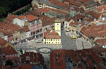
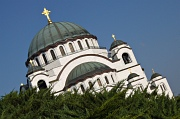
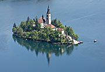
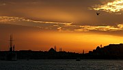
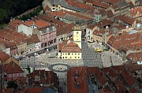
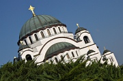
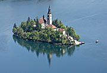
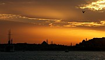

The Balkans :: Introduction
The countries described in this site are all located in Southeast Europe, but that's about the only thing they have in common. I did try to come up with a few general statements for this overview, but the necessary exceptions and clarifications would quickly have sent all my readers to sleep. So I will simply say that the countries of the Balkans have as much and as little in common as any dozen European countries.
The lack of common characteristics hints at an aspect of the region that is very appealing to travellers: the diversity of its people, culture, history, and landscapes. To some extent this reflects my rather broad definition of "the Balkans", in contrast to alternative definitions based on some shared historical experience. But diversity is not just a matter of differences between countries - regional differences are an equally important part of the complex Balkan tapestry. In Serbia, Novi Sad is very different from Novi Pazar; the architecture of Zagreb in Croatia is quite different from that of Dubrovnik; in Romania, the centre of Sibiu looks nothing like the centre of Iaşi.
Planning a trip
Because each Balkan country is so different, most of the practical information in Balkanology can be found in the pages dealing with individual countries. But because most of these countries are quite small, many people like to visit several in a single trip. Here are a few things to bear in mind if you are planning a tour of several countries:
- Don't rush. Overland travel in the Balkans can often be slower than in Western or Central Europe, whether you travel by train, bus, or car. This is partly due to patchily developed infrastructure, and partly the result of the region's complex geography, with lots of mountain ranges and few plains or broad river valleys. It's best to avoid stress by building this into your plans from the start.
- Many people plan their itinerary around major cities. This is not necessarily a good strategy in the Balkans. The main cities are temptingly easy to get to, but often not the most interesting destinations. For example, don't head for Bucharest or Sofia just because they are capital cities - they do appeal to some tastes but few visitors would rank them among the highlights of Eastern Europe.
- If you won't be driving yourself, be flexible about your method of transport. Whereas it is possible to get just about everywhere in Central Europe by train, it's a different story in the Balkans - only Romania comes even close to having a comprehensive rail network. The western flank of the peninsula, from Slovenia south to Greece, is particularly lacking in useful railways - so be prepared for plenty of bus rides.
- Travelling through the Balkans in a rental car can be trickier than you might think. Not all companies allow their cars to be taken across all international borders - for example you probably won't be able to hire a car in Greece and take it to Albania. Even where it is allowed, one-way drop-off fees may be prohibitive. The situation varies depending on the countries and companies involved so it's impossible to give general guidance here. If you are planning a multi-country trip, try to make contact with rental companies at an early stage to avoid disappointment. Some travellers find it easier to use public transport for cross-border trips and hire cars within individual countries.
- If cost is a major concern, Croatia, Slovenia, and Greece tend to be more expensive than the rest of the Balkans. Even these countries can be good value, especially outside the summer season.
- Be realistic about likely weather conditions. Nowhere in the Balkans can be considered a winter sun destination, and weather all over the peninsula can be unpredictable outside the summer season.
- If you are looking for a holiday in a place that is well organised for tourists, with no language difficulties, a mixture of sightseeing and relaxing, and a high chance that everything will go according to plan, consider the Croatian Adriatic or Slovenia.
- If on the other hand you want to avoid other foreign tourists, don't go to the places I have just mentioned (or go there in the off season). You may find Albana, Macedonia, and Serbia particularly appealing, but every country in the region has plenty of interesting places that don't see many visitors.
- It's worth learning to read the Cyrillic alphabet if you're going to Bulgaria, Macedonia, or Serbia - it doesn't take long and you won't feel quite so lost.
- If you travel through multiple Balkan countries you'll find yourself dealing with a variety of currencies. Some of these currencies are not easy to exchange outside their own country - even in neighbouring states. It's best to avoid ending up with a large wad of unspent Albanian lek or Bosnian marks. Of course this doesn't apply to countries that use the Euro (Greece, Slovenia, Montenegro and Kosovo).
A train trip across the Balkans from Ljubljana to Istanbul takes 34 hours (including a couple of hours waiting for a connection in Belgrade). That's about the same time as a train journey from Berlin to Lisbon, or from Los Angeles to Seattle.
Explore further
The links page lists Internet resources that may be useful in planning a trip to the Balkans; the guidebooks page does the same for printed guides. A tour of the Balkans can be made even more enjoyable by reading the accounts of earlier travellers or studying a little history: the suggested background reading will point you in the right direction. I've also attempted to answer some of the most Frequently Asked Questions about travel in the region.
If you know which country you are interested in, you can go straight to the individual country guides:
Agatha Christie's novel The Secret of Chimneys, published in 1925, neatly summarises the typical Western European view of the Balkans at that time. It features a sinister character from Herzoslovakia, "one of the Balkan states... Principal rivers, unknown. Principal mountains, also unknown, but fairly numerous. Capital, Ekarest. Population, chiefly brigands. Hobby, assassinating kings and having revolutions". Eighty years later, I'm not sure if very much has changed. Balkanology is my modest attempt to encourage a more balanced view.

 






